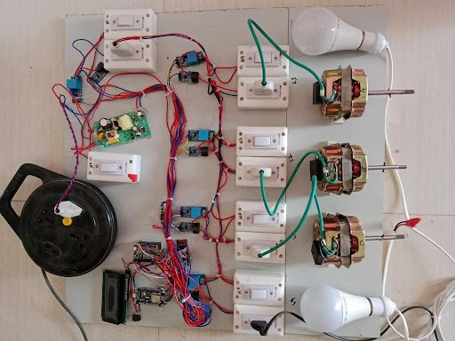
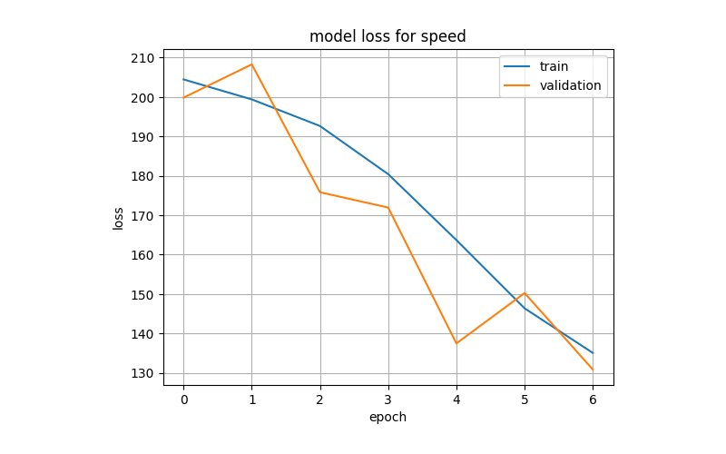
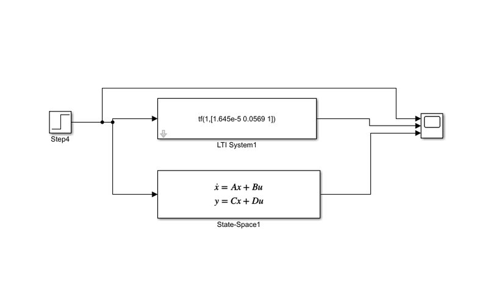
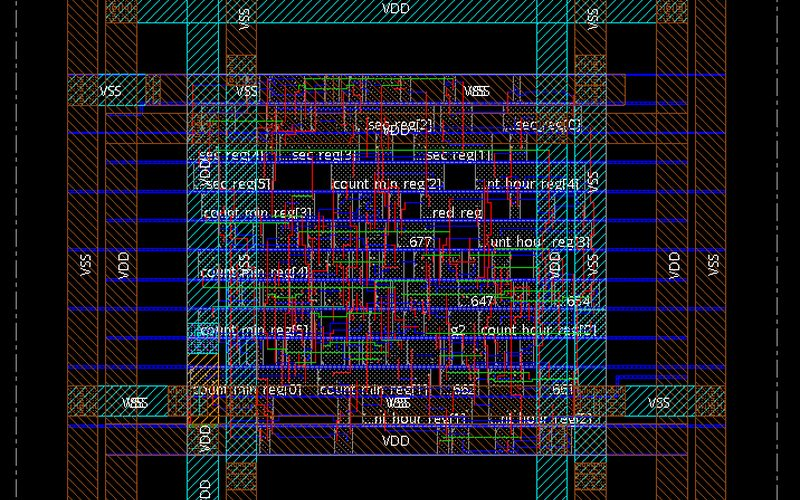
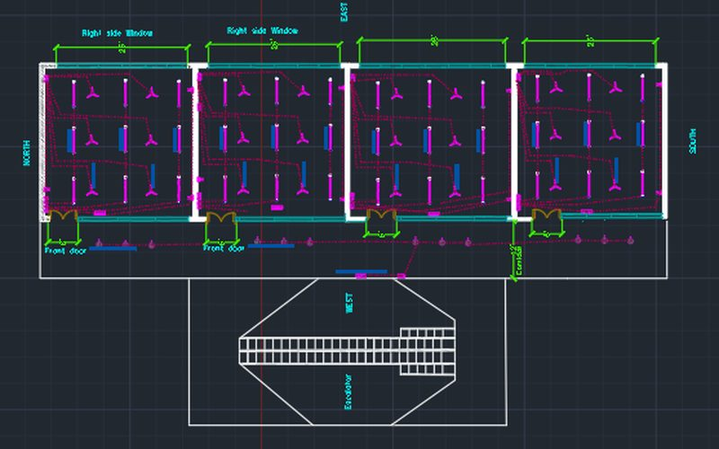
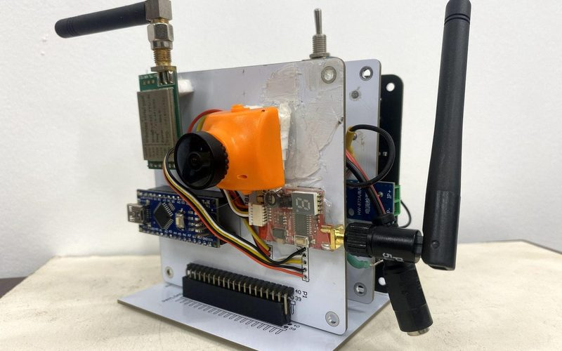
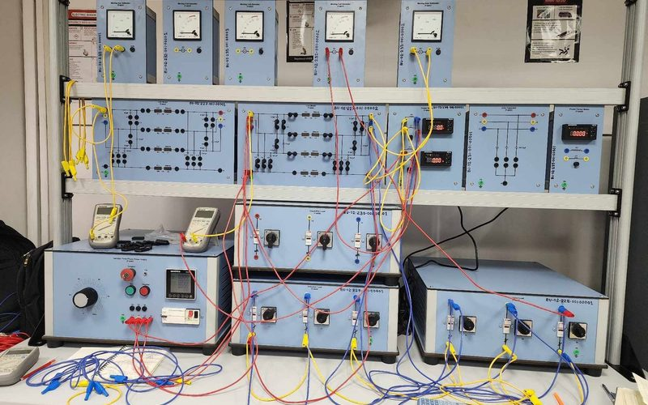
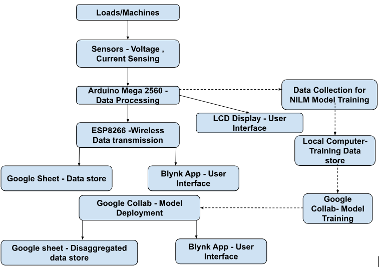

Launched this portfolio website
A home for my projects, research and experience, with detailed pages for each engineering project.
See the projectsMEng Student in Electrical & Computer Engineering
Exploring Intelligent Technologies for Electrical and Energy Systems.
I am currently pursuing a Master of Engineering in Electrical & Computer Engineering at the University of Calgary, building on my undergraduate background in Electrical & Electronic Engineering from BRAC University.
My academic and project work has allowed me to explore different aspects of electrical engineering, from circuit-level hardware implementation and embedded systems to data acquisition, signal processing, and machine learning. I am particularly interested in power systems, intelligent energy technologies, and developing practical solutions for monitoring, understanding, and optimizing electrical systems.
From electrical hardware to intelligent systems — exploring how technology can make energy systems smarter.
Location: Calgary, Alberta, Canada

My foundation is in electrical and electronic engineering. At BRAC University in Dhaka I specialized in electronics, and my coursework and projects ranged from overhead transmission-line measurements and electrical service design to Verilog-to-layout chip design and embedded firmware.
Much of my work has been practical implementation. For my final-year design project, which I led, our team built voltage and current sensing hardware around an Arduino Mega and ESP8266, collected more than 180,000 samples from identical induction motors, and adapted a deep-learning model to estimate each motor's power from a single measurement point. That project became my first research preprint on arXiv.
I enjoy the space where hardware meets software: sensors, microcontrollers and communication links on one side, and Python, MATLAB and machine-learning models on the other. At the University of Calgary I am now building on this foundation, with a focus on power systems and intelligent energy technologies.
A home for my projects, research and experience, with detailed pages for each engineering project.
See the projectsBegan the MEng program in Electrical & Computer Engineering at the Schulich School of Engineering.
"Real-Time NILM-Based Power Monitoring of Identical Induction Motors Representing Cutting Machines in Textile Industry" (arXiv:2601.01616).
Read on arXivCompleted my BSc in Electrical & Electronic Engineering with a specialization in electronics.
University of Calgary, Calgary, Canada
BRAC University, Dhaka, Bangladesh
BAF Shaheen College Kurmitola, Dhaka, Bangladesh
Homna Government High School, Homna, Cumilla, Bangladesh
Awarded by the Board of Intermediate and Secondary Education for ranking among the top merit holders in the Secondary School Certificate examination.
Recognized at the national merit tier for outstanding results in the Class 8 national examination.
Talent Pool distinction in the Class 5 national primary examination.
Tools and methods I've used in coursework, projects and research.
Measurement, analysis and design of electrical systems.
Sensor interfacing, data acquisition and connected devices.
Protocols and wireless links used in my hardware projects.
Learning from measured and time-series data.
Languages and simulators for modelling and verification.
Schematics, PCBs, chip layout and electrical drawings.
Hardware builds, simulations and data projects, most recent first. Each one has a detailed page with methods, figures and results.

Voltage and current sensing hardware plus a fine-tuned MATNILM deep-learning model that estimates the power of individual induction motors from one measurement point. Real-time results: F1 score 0.82, MAE 13.43 W.

24 years of meteorological data used to assess wind energy potential. The MLP model achieved 12.4% lower MSE than linear regression.

A microcontroller voting system simulated in Proteus, with interrupt, push-button and keypad input designs compared.

Numerical differentiation, transfer-function and state-space models, and RK4 integration of RC circuits in MATLAB/Simulink.

A 24-hour alarm clock in Verilog HDL, verified by testbench, synthesized with two libraries and laid out with zero DRC violations.

AutoCAD electrical layouts for four classrooms. The selected design cut planned lighting consumption by 50%.

A modular educational satellite with solar-charged power, onboard computer, LoRa telemetry and 5.8 GHz video.

Lab measurements of two line models in parallel across five load steps, with and without capacitors and with one line disconnected.
Preprint · arXiv · 2026
Textile factories in Bangladesh use a lot of energy but rarely monitor it machine by machine. This work proposes a real-time non-intrusive load monitoring (NILM) framework for identical motor-driven cutting machines. A new dataset of 180,631 samples was built from three identical 50 W induction motors and an auxiliary lighting load, and the MATNILM deep-learning model was evaluated on it. The system tracked total energy reasonably well, but separating machines that run at the same time remained difficult, which points to higher sampling rates, larger datasets and hybrid methods as next steps.


January 2022 – July 2022
Bangladesh Air Force Academy, BAF Base Matiur Rahman, Jashore, Bangladesh
This was a period of officer cadet training, not completed military service.
Photos from officer cadet training, 2022. Click a photo to view it full size.
Community work, and the interests I enjoy outside engineering.
I help connect patients who need blood with donors through the forum's member network. I support the coordination of about ten blood requests a month on average, and keep in touch with three blood bank contacts in Dhaka to locate donors and respond to patient requests.
I'm open to conversations about internships, research and engineering opportunities. Email is the best way to reach me.